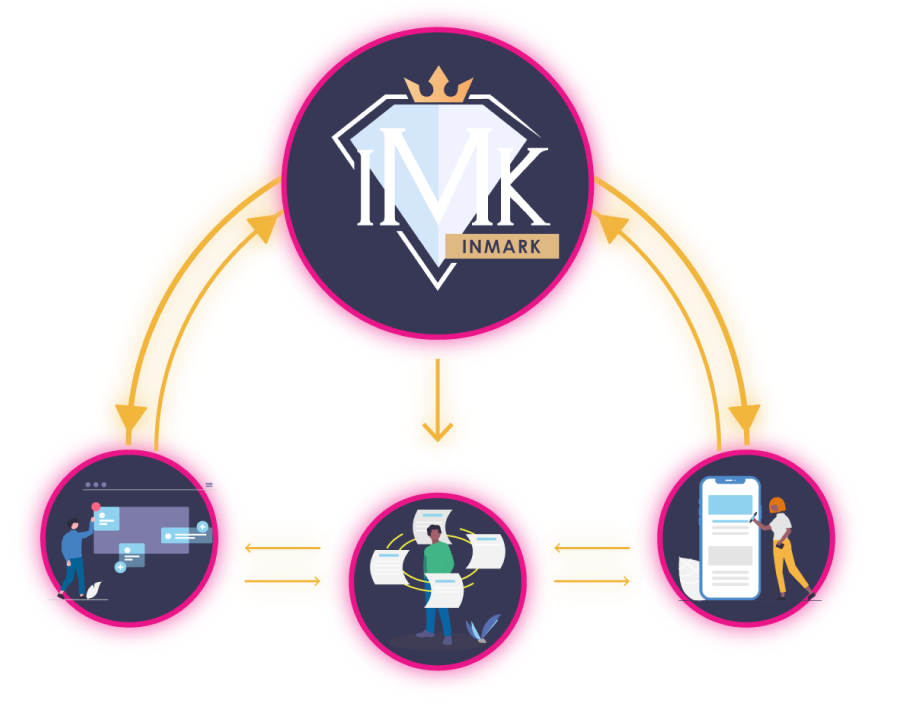

Advertisers
X
Influencers
Advertising mediation matching platform
About


InMark
광고주와 인플루언서를 직접 연결과 계약을 지원하며
인플루언서의 마케팅 활동을 트랜잭션 기반으로
캠페인 기여도를 측정하고 그에 따른 리워드를 지급하는
POC 방식의 보상 및 광고비 합리화 시스템을 지원하는 플랫폼입니다.